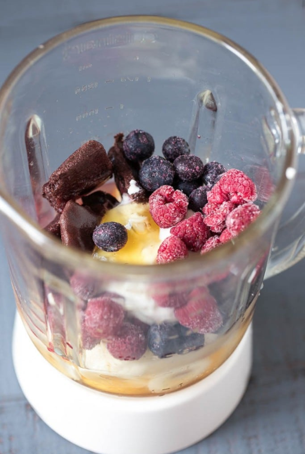
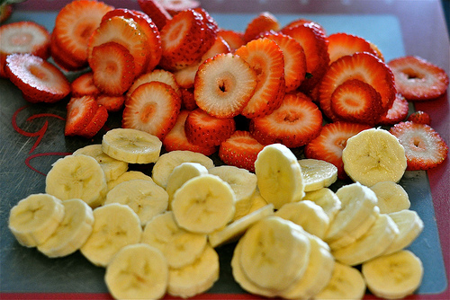
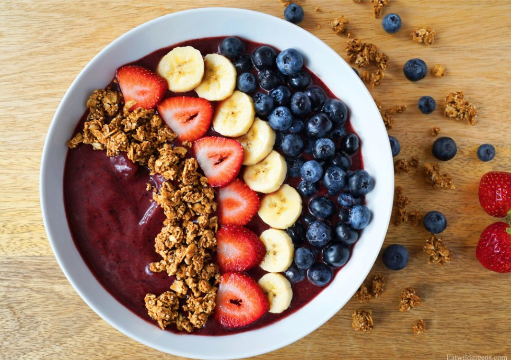

Acai bowls are the perfect light meal or mid day snack. It's a little thicker than a smoothie with fresh fruit, granola, and any topping that you can think of. It's the best summer snack.
Base:
Toppings:
Put all the ingredients for the base into the blender and blend until smooth.
Slice the banana and strawberries. Then, measure out how much granola you would like.
Pour your base into a large bowl and put your fresh fruit and granola on top. At the end, drizzle a light amount of honey on top. Now enjoy your delicious Acai Bowl!
Here is a video tutorial on how to create an Acai Bowl.